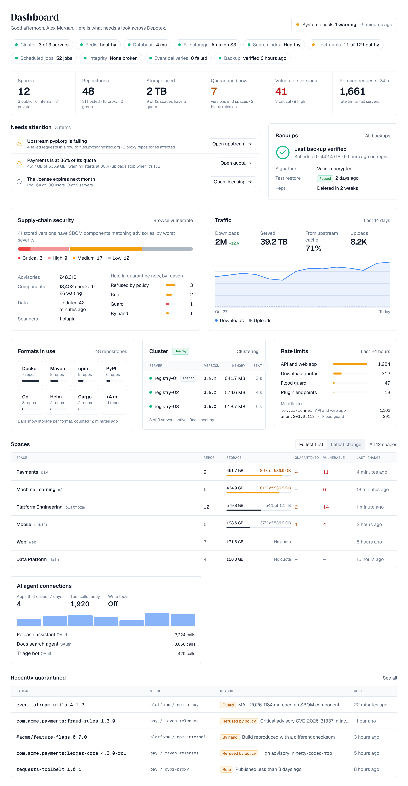
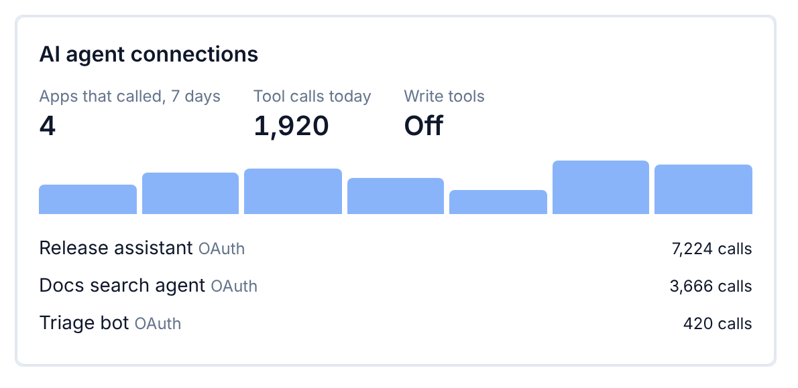
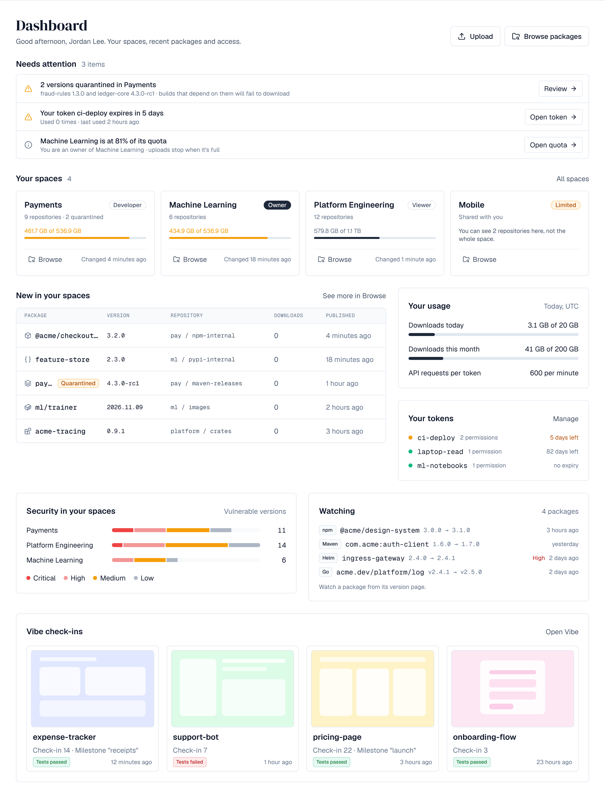

1. Overview
Dashboard is the first page after signing in. Administrators (with the depot:read permission) see the whole installation; everyone else sees their own spaces, what's new in them, their usage and tokens, security in their spaces and the packages they watch (see Your dashboard below). The greeting follows the time of day on your own computer.

Every part of the page shows only what you're allowed to open: a card, row or link for something you have no permission for is left out rather than shown and refused. Each part loads on its own, so a slow one doesn't hold up the rest.
2. Health
A line of chips under the greeting sums up the installation, each with a coloured dot (green fine, amber needs a look, red a problem, grey not checked yet) and a link to where it's managed. Hover a chip for its detail.
| Chip | Shows | Permission |
|---|---|---|
| Cluster | Servers running out of all registered | cluster:read |
| Redis | Healthy or degraded, as the answering server sees it (left out without Redis) | cluster:read |
| Database | How fast PostgreSQL answered | settings:write |
| File storage | Where files are stored, and whether the storage ID check passed | storage:admin |
| Search index | Up to date, rebuilding or behind | depot:read |
| Upstreams | How many are healthy | upstreams:read |
| Scheduled jobs | How many jobs, and whether any are failing | scheduler:read |
| Integrity | Broken files found by the last integrity run | integrity:admin |
| Event deliveries | Failed deliveries waiting | events:admin |
| Backup | Whether the newest backup was verified, and when it was made | backups:read |
With the system check (Pro license, settings:write), the top of the page also shows how its latest run went, for example System check: 2 warnings · 14 minutes ago; select it to open the system check. The dashboard reads what is already known and never runs a test itself.
3. Figures
Six figures sum up the installation. Select one to open where it's managed.
| Figure | Shows |
|---|---|
| Spaces | Public, internal and private |
| Repositories | Hosted, proxy, group, and how many are offline |
| Storage used | And how many spaces have a quota |
| Quarantined now | Versions held, in how many spaces, and how many block rules are on. Blocked versions aren't counted: blocking is decided when someone downloads |
| Vulnerable versions | Stored versions whose SBOM components match advisories, with how many are critical and high; opens Browse filtered to them |
| Refused requests, 24 h | Requests rate limits refused in the last 24 hours, on every server (on the answering server only without Redis). Shown with settings:write |
4. Needs attention
The list is what someone should look at now, worst first, each with a button to where it's fixed. When nothing needs you, it says so. For administrators it can hold:
| Item | Shown to | Button |
|---|---|---|
| An upstream is paused after repeated failures, failing (including when only the host its files come from fails), or failed in the last 15 minutes though it has answered since, with how many proxy repositories use it | upstreams:read | Opens the upstream |
| Broken files in storage found by the integrity check | integrity:admin | Opens Integrity |
| A space is past its quota's warning, or full | depot:read | Opens the space's quota |
| A scheduled job failed three times in a row | scheduler:read | Opens Scheduled jobs |
| The license expires within 45 days, has expired or isn't valid | licenses:admin | Opens Licensing |
Members see versions held in quarantine in their spaces (with Review when they may release them, View versions otherwise), their own API tokens that expire within a week (the button opens the tokens in your profile settings), and spaces they own that are nearly full.
5. Backups
Beside the list, with backups:read: the newest backup, whether it was verified, its kind, size, age and the server that made it; its signature and whether it is encrypted; its newest test restore; and how long it is kept. All backups opens Settings → Backups.
6. Supply-chain security
The stored versions whose SBOM components match advisories, as one bar by worst severity (critical, high, medium, low). Counted on the search index, so it follows what Browse finds; Browse vulnerable opens Browse filtered to them. For whoever manages the vulnerability data, the card also shows how many advisories are known, how many components were checked and how many are waiting, when the data was last updated, and how many scanner plugins answer. For whoever manages quarantine (Enterprise), it shows the versions held now by what put them there: a policy, a rule, a guard or by hand.
7. Traffic
What every repository served and received over the last 14 days (days in UTC, today last): Downloads with the change from the 14 days before, bytes Served, the share proxies served From upstream cache, and Uploads, with downloads and uploads per day on one chart. Counts are kept per day for 400 days and reach the chart within a minute. When counting began within the 14 days (after an upgrade), the chart says since when and the change isn't shown.
8. Formats in use
How many repositories each format has, and a bar for the bytes each format stores against the format that stores most. Storage per format is counted every 30 minutes; the card says when. Select a format to open Browse filtered to it.
9. Cluster and rate limits
- Cluster (cluster:read): every server with its version, memory, how many seconds ago it last reported in and which one leads; under them how many are active and whether Redis is healthy. Clustering opens Settings → Clustering.
- Rate limits (settings:write): requests refused in the last 24 hours per class (API and web app, package traffic, download quotas, flood guard, plugin endpoints) and the callers refused most. Without Redis the counts are the answering server's own, which the card says.
10. Spaces
The six fullest spaces (share of their quota), or the six with the latest change: switch with Fullest first and Latest change. Each row shows repositories, storage against the quota (amber from the quota's warning, red when full), versions quarantined, versions with known vulnerabilities and when something last changed. All spaces opens the full list. On a phone each space is a card.
11. Plugin cards
Active plugins can add their own cards to the dashboard (the dashboard.widget screen), shown only to people with the permission the plugin names, and only while it is active. The sample depotex-mcp plugin adds AI agent connections for people with plugins:read: how many AI applications called its tools in the last 7 days, the tool calls today, whether write tools are on, calls per day, and the applications that called most.

12. Recently quarantined
The five versions quarantined most recently anywhere in the installation, with where they are, why (by hand, by a rule, by a guard or refused by policy) and when. Shown with Enterprise to whoever manages quarantine (artifacts:quarantine:manage); See all opens Settings → Quarantine.
13. Your dashboard
Without administrator rights the dashboard is about you. Upload and Browse packages at the top open those pages.

- Your spaces: a card for each space you're a member of (up to eight; All spaces lists every space you can see), with your role, how many repositories it has and how many versions are quarantined, its storage against the quota, and when something last changed. Browse opens Browse showing only that space. A space where you can use only some repositories is marked Limited, with how many you can see.
- New in your spaces: the six newest versions in your spaces, with their repository, downloads and when they were published; a quarantined, blocked or broken version is marked. See more in Browse opens Browse.
- Your usage: what you downloaded today and this month (UTC) against your download quota, when quotas are on, and how many API requests each of your tokens may make.
- Your tokens: your active API tokens, soonest to expire first, with how many permissions each has and how long it has left (amber within a week). Manage opens them in your profile settings.
- Security in your spaces: per space, the versions with known vulnerabilities by worst severity, on one scale. Select a space to open Browse filtered to its vulnerable versions. Spaces with none are left out.
- Watching: the packages you watch, newest change first, with the newest version and the one before, its worst known severity and whether it is quarantined. Watch a package with Watch on any of its versions' pages in Browse (up to 200).
- Vibe check-ins (Enterprise, while vibe artifacts are on): the four newest check-ins you can see, with their cover, milestone and whether their tests passed.
- Cards that plugins add, as above.
14. API
| Endpoint | Permission | Returns |
|---|---|---|
| GET /api/depot/overview?sort=fullest|activity&limit= | depot:read | The figures, the spaces table, repositories and stored bytes per format (formats), and when the bytes were counted (usageMeasuredAt) |
| GET /api/depot/traffic?days= | depot:read | Downloads, bytes served, cached downloads, uploads and upstream fetches per day (days: 1–90, default 14), the totals, the previous period's downloads and the first counted day |
| GET /api/browse/vulnerability-summary?spaces= | signed in | Your vulnerable versions by worst severity, in all and per space (only the repositories you may browse) |
| GET /api/me/watches | signed in | The packages you watch, with their newest and previous versions |
| PUT /api/me/watches | signed in; repo:browse on the version | {"versionId"}: watch that version's package. More than 200 is refused with too_many_watches |
| DELETE /api/me/watches/{id} | signed in | Stop watching |
| GET /api/plugins/{name}/endpoint-usage?days= | plugins:read | Calls to a plugin's protected endpoint (its MCP server) per day and per application, failures included (days: 1–90, default 7) |
Watched packages are personal data: they're included in a person's data export and deleted with their account. Reading the dashboard and watching a package raise no events.